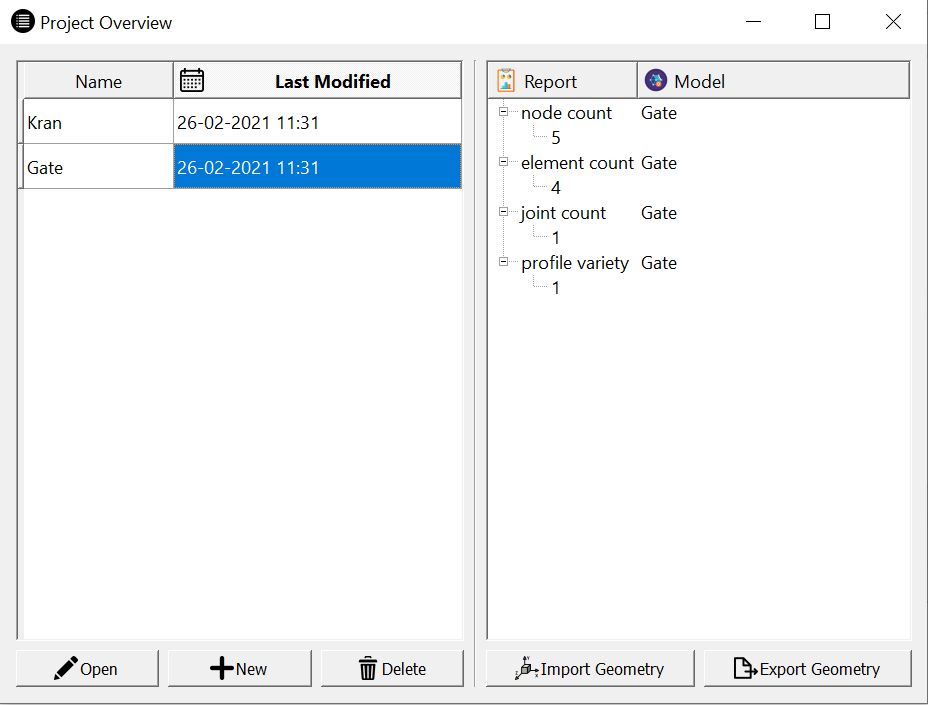
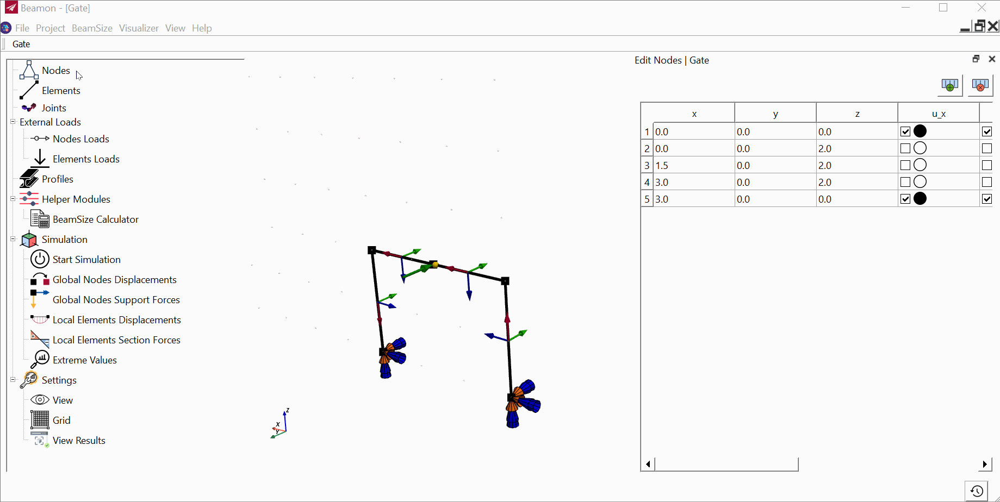

Getting Started¶
Installation¶
Beamon SAD can be used as Program that can be installed or run directly as a python package.
Windows Installer¶
Executing the Beamons installer in release directory shows a Wizard to help user threw the installation process. Make sure to specify an installation location with access rights.
Windows Portable Version¶
Run Beamon executable files from releases directory.
Starting Beamon¶
How To Use beamon Package¶
To run Beamon package use the following command in your python environment:
python -m beamon
This will execute the user interface of Beamon
Beamon’s command Line Arguments¶
Available command line arguments are:
-i <path to geometry file>
-m model name for the imported geometry file
-t test mode (lunches all submodules on start)
-r ram mode (runs database on RAM)
-d <path to database file>
Using Beamon¶
Browsing Models¶
A list of project names and their last modification date can be seen in the project overview window. Model names can be changed when the user double clicks on the model name in the table.
On the right side, there is a report for each selected model showing the number of nodes, elements, joints, and how many profiles are used by the model.
The user can import geometry to the model or export existing geometry. Upon importing a geometry file to a selected model user can choose between appending and overwriting geometry to the model. Appending geometry means current geometry will be extended. Overwriting means the current geometry will be erased and replaced with the imported ones.
Using the Visualizer¶
The Visualizer consists of a virtual 3D room, called visualization, to display the structure and a tree of selectable elements to modify the structure. To modify nodes for example click on the Nodes element on the left-hand side section and a table will be displayed. To see visualization controls click on Visualization -> Help on the toolbar.